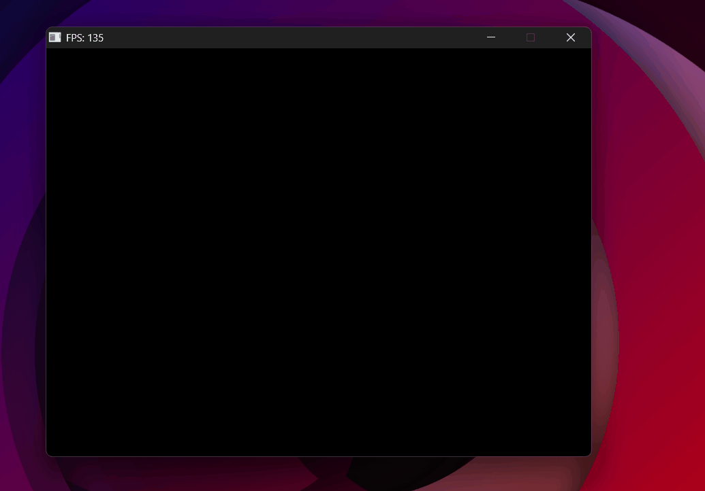

Free Camera — WASD & Mouse Look
Moving through the scene — yaw, pitch, and a bug that made the world spin.
The goal
Up to this point the camera was fixed. The next step is free movement: WASD to translate, mouse to rotate.
The lookAt function from the matrices section takes two things — an eye position and a target point — and builds the view matrix from them. To move the camera, all we need is to update those values every frame: move the eye position with WASD, and compute a new target point based on where the camera is pointing.
That direction the camera points is the front vector — a unit vector from the camera's position toward its target. Every frame, we compute front from the camera's current orientation, then pass eye and eye + front to lookAt.
Yaw and pitch
Rather than storing front directly — which is hard to control interactively — we store two angles that describe the camera's orientation:
- Yaw (θ) — rotation around the Y axis. How far left or right the camera faces.
- Pitch (φ) — rotation around the X axis. How far up or down the camera looks.
These two angles map to a 3D direction vector in two steps — apply pitch first, then yaw.
Step 1 — Pitch in the YZ plane. Start with the camera looking straight forward along +Z: front = (0, 0, 1). Rotating it upward by φ is a standard 2D rotation in the YZ plane (X doesn't move):
Simple. Y gets sin φ, Z gets cos φ — just like the unit circle.
Step 2 — Yaw in the XZ plane. Now look at this vector from above (top-down view of the XZ plane). The horizontal component pointing forward is Z, which now has length cos φ — not 1. Pitch made it shorter.
We want to rotate this shortened vector sideways by θ. Using the standard trig relations for a right triangle where the hypotenuse is cos φ:
The result:
- y = sin φ — how much the camera points up
- x, z get scaled by cos φ — the horizontal components shrink as the camera tilts up
- When φ = 0: cos φ = 1, camera looks fully horizontal. When φ = 90°: cos φ = 0, camera points straight up.
Vec3 front = Vec3{
sinf(cam.yaw) * cosf(cam.pitch), // x
sinf(cam.pitch), // y
cosf(cam.yaw) * cosf(cam.pitch) // z
}.normalize();
Mouse input
By default, SDL gives the mouse's absolute position on screen. For camera control, that's not useful — what matters is how much the mouse moved since the last frame. SDL's relative mode does exactly this: it hides the cursor and reports only the delta (change) in position each frame.
SDL_SetWindowRelativeMouseMode(window, true); // hide cursor, report deltas
// In the event loop:
if (event.type == SDL_EVENT_MOUSE_MOTION) {
cam.yaw -= event.motion.xrel * sensitivity; // subtract: mouse right → world turns left
cam.pitch -= event.motion.yrel * sensitivity; // subtract: mouse down → camera looks down
cam.pitch = std::clamp(cam.pitch, -1.5f, 1.5f);
}
The clamp on pitch prevents looking directly straight up or down. Without it, the camera hits gimbal lock — a phenomenon visible in the demo above where two rotation axes align and the camera loses a degree of freedom, causing erratic flipping. Clamping pitch to ±~85° keeps the camera stable.
WASD movement
With front computed each frame, movement is straightforward. To move sideways, we need a right vector — perpendicular to front in the horizontal plane. The cross product of front and world up (0, 1, 0) gives exactly that:
Vec3 right = front.cross(Vec3{0, 1, 0}).normalize();
// Move along the camera's local axes
if (keys[SDL_SCANCODE_W]) cam.position = cam.position + front * speed;
if (keys[SDL_SCANCODE_S]) cam.position = cam.position - front * speed;
if (keys[SDL_SCANCODE_A]) cam.position = cam.position - right * speed;
if (keys[SDL_SCANCODE_D]) cam.position = cam.position + right * speed;
W/S move along front (forward/backward), A/D move along right (left/right). Every frame, lookAt(cam.position, cam.position + front) rebuilds the view matrix with the updated values.
Bugs
1.0. Mouse deltas from SDL are in pixels — a small movement returns values like 3 or 5. Multiplied by 1.0, that's 3–5 radians of rotation per frame.
const float sensitivity = 0.001f — scales pixel deltas down to a reasonable angular change per frame.

Sensitivity at 1.0 — any mouse movement sends the camera spinning.
lookAt matrix was not inverted. As explained in the Matrices section, the view matrix is the inverse of the camera's world transform. Without inverting it, the matrix was applying the camera's own orientation to the world instead of undoing it — rotating everything in the wrong direction.
lookAt matrix so it undoes the camera's world transform instead of applying it.

lookAt without transposing — the camera axes are wrong and everything spins incorrectly.
Result
With a working free camera, the scene can now be explored in real time. The next step is lighting — Phong shading.